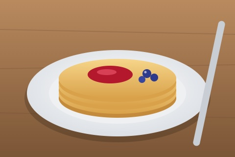

Pannkakor
Tunna pannkakor till fyra personer. Det tar ungefär en halvtimme.

Ingredienser
- 3 dl vetemjöl
- 6 dl mjölk
- 3 ägg
- en nypa salt
- smör till stekpannan
Gör så här
- Vispa mjölet med hälften av mjölken till en slät smet.
- Vispa i resten av mjölken, äggen och saltet.
- Låt smeten vila i minst tio minuter.
- Smält lite smör i pannan och häll i ett tunt lager smet.
- Vänd pannkakan när undersidan är gyllenbrun.
Servera med sylt. De smakar allra bäst nygräddade.
Läs mer om pannkakor på
Wikipedia.